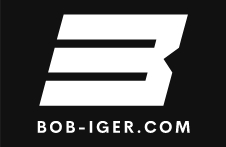

New perspectives: Bob Iger @ Future-Secured (29 March 2022)
New article: Ormus King Octology vs Disney Star Wars (3 July 2020)

"The riskiest thing we can do is just maintain the status quo." ~ Iger '06
|
Iger on Optimism: "One of the most important qualities of a good leader is optimism, a pragmatic enthusiasm for what can be achieved. Even in the face of difficult choices and less than ideal outcomes, an optimistic leader does not yield to pessimism. Simply put, people are not motivated or energized by pessimists." "Optimism sets a different machine in motion. Especially in difficult moments, the people you lead need to feel confident in your ability to focus on what matters, and not to operate from a place of defensiveness and self-preservation." |
Iger on Consumers: "Keeping it simple for the consumer is incredibly dire." "It's in our best interest to put some of the old rules aside and create new ones and follow the consumer - what the consumer wants and where the consumer wants to go." "People go to Disney because they know its brand attributes. We believe we have an opportunity to go with our content directly to consumers." |
Iger on Star Wars: "As one of the few people allowed to visit the set during filming... and one of the fewer who’s seen most of the footage… I can assure the millions of Star Wars fans who have spent the last decade hoping for a new movie this one will be worth the wait. Get Your Geek On, 2015, 1 |
|
Welcome. This site offers a total strategic solution for The Walt Disney Company (hereafter Disney) allowing the company to potentially emulate General Electric, where diversification placed it at the apex of America's industrial creativity. The optimum result of the solution, as implemented by Disney, is a substantial increase in its profitability and an excellent display of Corporate Social Responsibility with the potential for extraordinary benefits to society-at-large. The solution consists of:
|
| So far no comment or feedback has been made about this site and its contents by Bob Iger or Disney. The author, Adrian Wajsbrem, may be contacted here. (creation date: 1 July 2020) |
* Without prejudice, this website is not intended to be defamatory or libellous; but rather a path to ensure the survival of the The Walt Disney Company and the goodwill of Robert Iger. Although Bob-Iger.com may be associated with The Walt Disney Company, (its website being disney.com) this website can only be construed as enhancing the goodwill of both domain names and harmful to neither.